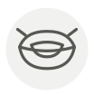

Crab tomalley (kani miso)
Crème de crabe (kani miso)
| Latin name | Brachyura / Nephropidae (hepatopancreas) |
|---|---|
| Family | Shellfish & molluscs |
| Origin | Inside the crab shell |
| Season | All year |
| Flavour | Rich · Briny · Umami · Marine |
| Typical price | 60–120 €/kg |
What it is
Kani miso is named for what it looks like: there is no miso in it, only the crab’s hepatopancreas, which does the work of both liver and pancreas. Because that organ filters, it concentrates whatever the water holds — which is why health authorities in red-tide seasons tell people to eat the meat and leave the tomalley.
In the kitchen
Scrape it out warm and whisk it into the pan sauce off the heat — it emulsifies like an egg yolk and gives a bisque body without flour. Boiled hard it splits into grains, so add it last.
Goes with
Brown crab Butter Cream Cognac Rice Lemon Junmai sake Tomato
Something wrong here, or missing? Tell us